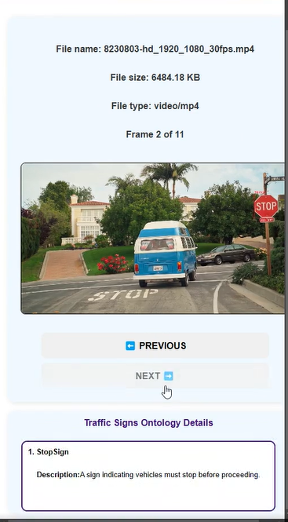
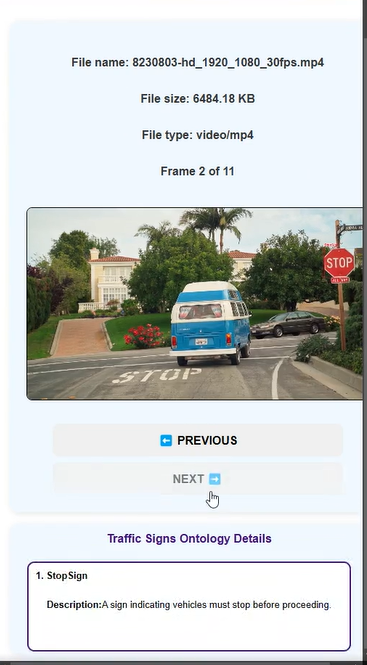
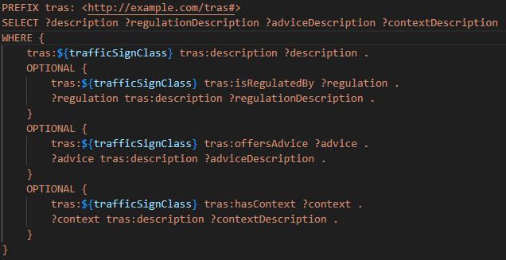
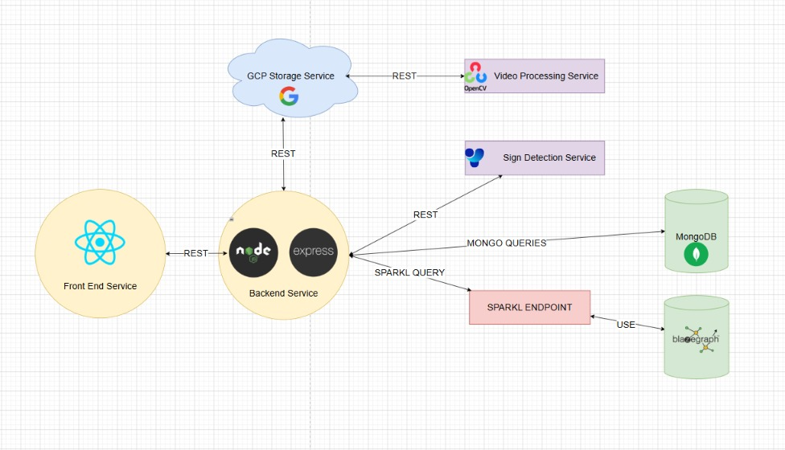
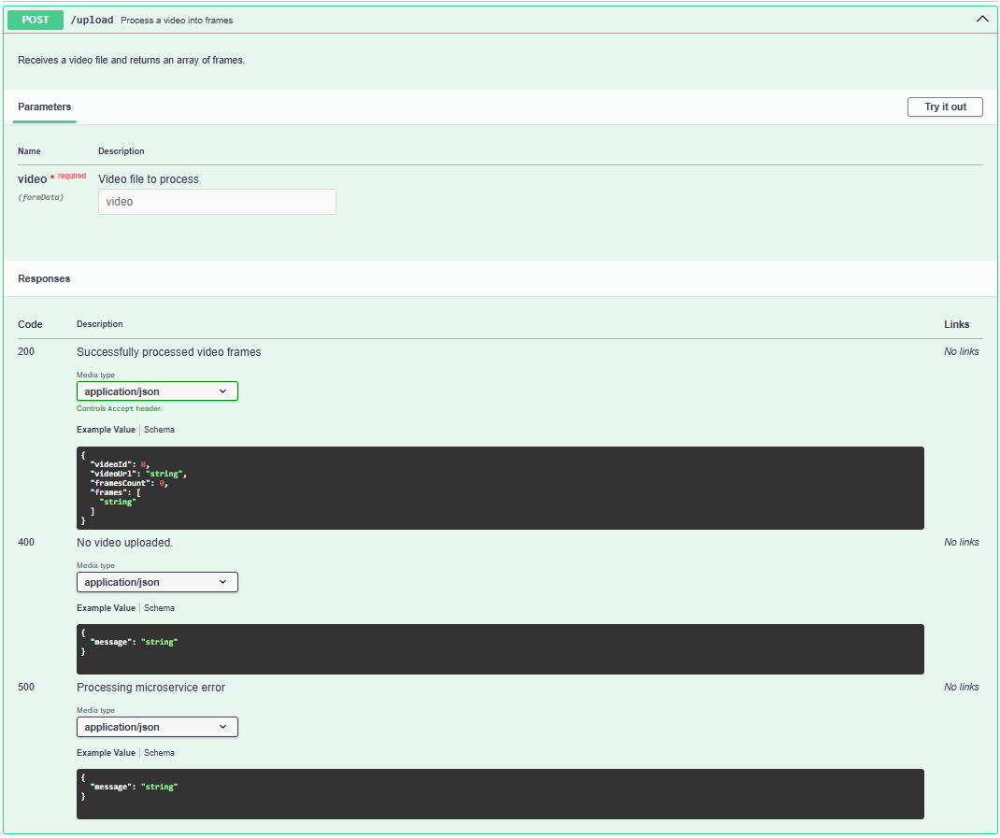
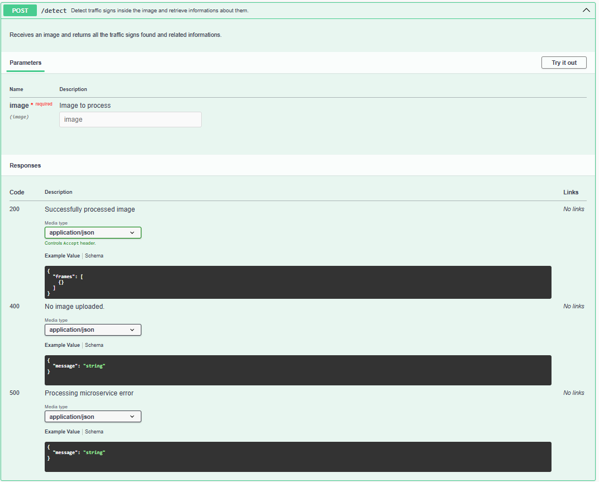
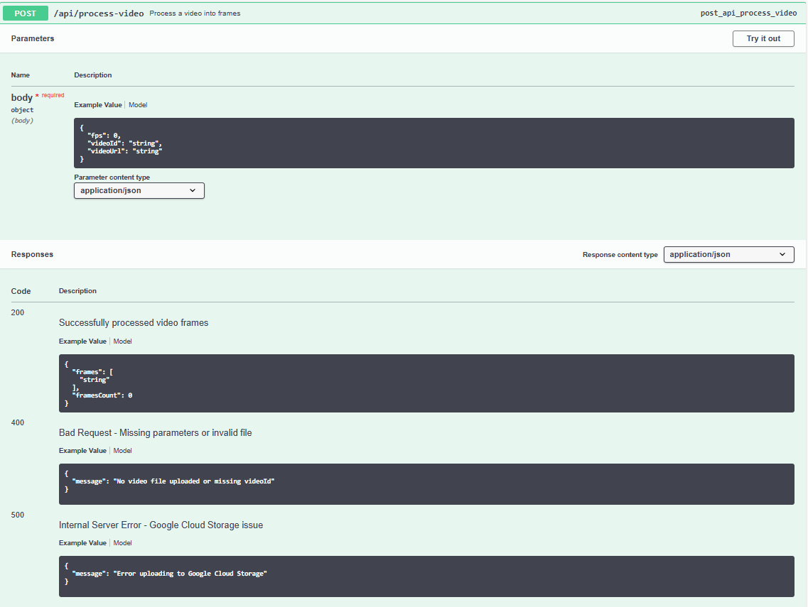
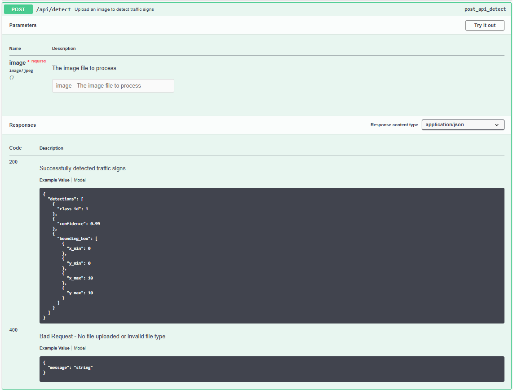
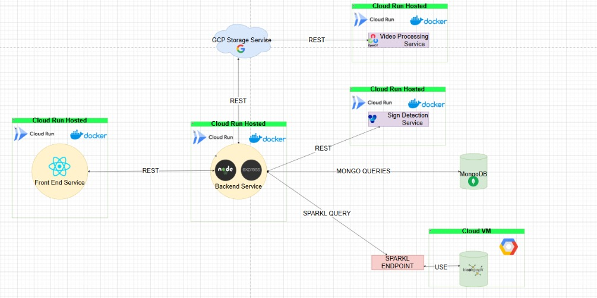

Traffic signs smart detector
Web Application Development | MSD2
Roman Ștefan | Tănase Alexandru - Ionuț
Description
Overview
TraS is a web-based application designed for easy and efficient road sign detection from video recordings. Users can upload videos of urban routes, and the system will automatically extract frames, allowing them to navigate through and analyze detected road signs. Each recognized sign is accompanied by relevant information, including its meaning and legal interpretation.
The goal of TraS is to assist urban planners, autonomous vehicle developers, and traffic management authorities in analyzing road conditions and improving transportation safety.
Objectives
The primary objectives of TraS are:
- Automated Traffic Sign Detection: Accurately identify traffic signs from video recordings using AI-powered object detection.
- Scalability and Modularity: Implement a microservice-based architecture to allow independent scaling of processing units.
- Semantic Knowledge Integration: Use an OWL-based ontology to enrich detected traffic signs with additional metadata and regulations.
- Efficient Video Processing: Split videos into frames and process them asynchronously to optimize detection speed.
- User Interaction and Reporting: Provide an interface for users to upload videos, view detections, and report incorrect results to improve the AI model.
- Cloud-Based Storage and Processing: Utilize cloud services for video storage, data management, and computational tasks.
Implementation
Overview
The TraS system follows a service-oriented architecture (SOA) composed of multiple independent services that interact through well-defined APIs. The architecture is designed for scalability, modularity, and efficient traffic sign detection from video recordings. Each component is developed using technologies best suited for its specific function.
Frontend: React provides a user-friendly and responsive interface for video uploads, frame navigation, and road sign exploration. Communication with backend is done using REST API`S.
Backend: Node.js wtih Express for handling Api requests, coordinates processing, and integrates system components.
Video processing service: Developed in Python using OpenCV for extracting frames from video. Stores extracted frames in Google Cloud Storage
YOLO detection service: Uses YOLOv8, trained on a custom dataset for traffic sign detection(traffic lights, speed signs and stop signs). Implemented in Python using the Ultralytics YOLO package. Processes frames received from the backend and returns detected traffic signs.
MongoDB Service: Stores video metadata, extracted frames, and detection results. Ensures fast retrieval of stored data for frontend visualization.
OWL Knowledge Service: Uses an RDF triplestore such as Blazegraph. Provides semantic enrichment using SPARQL queries.
Cloud Services: GCP Storage for storing raw videos and extracted frames. GCP Compute Engine or Cloud Run for deploying backend and microservices.
This architecture ensures high performance, scalability, and efficient road sign analysis.
Frontend
The frontend of the TraS (Traffic Sign Detection) application is developed using React.js, a powerful JavaScript library for building user interfaces. The design focuses on user-friendliness, providing a smooth and intuitive experience for users, while ensuring seamless interaction with backend services through REST APIs.
The key features provided by this service are:
- Video Upload Interface: Users can easily upload video files for processing.
- Frame Navigation: Once the video is processed, users can navigate through frames where traffic signs are detected.
- Traffic Sign Display: Detected traffic signs are visually highlighted, and users can interact with these signs to view more details.
The frontend communicates with the backend using REST APIs. Initially, when a user uploads a video, the frontend sends the video to the backend for processing. After the video is processed, users can navigate through the extracted frames by sending requests to the backend for each frame they wish to view.
All of these actions take place within the same page, providing a seamless experience for users. The interface is designed to be responsive, ensuring that the application functions optimally on both desktop and mobile devices, with easy-to-use navigation and clear visual feedback on the video processing status.
 

Backend
The backend of the TraS (Traffic Sign Detection) application is implemented using Node.js with Express. It serves as the central coordinator, managing communication between the frontend and microservices while handling video uploads, processing requests, and enriching data with semantic information.
The main responsibilities of the backend include:
- Video Upload and Processing: The backend handles video uploads from the frontend, sending the video to the video processor microservice for frame extraction and processing.
- Task Coordination: It delegates tasks such as video processing and sign detection to the appropriate microservices, ensuring smooth operation across the system.
- Semantic Enrichment: After traffic sign detection, the backend enriches the results with additional semantic information from the OWL Knowledge Service.
The backend provides two key routes:
- /video/upload: Handles video uploads from the frontend, processes the video, and stores frame data.
- /yolo/detect: Sends image frames to the YOLO microservice for traffic sign detection and retrieves results.
The backend communicates with other microservices via REST APIs and interacts with a database to store and retrieve information about processed videos and detected signs. Further details about the REST API endpoints will be covered in the API section.
Video Processing Service
The Video Processing Service is developed in Python, utilizing OpenCV for frame extraction from uploaded videos. It plays a crucial role in breaking down videos into individual frames for further analysis, particularly for traffic sign detection.
The key features and responsibilities of the Video Processing Service are:
- Frame Extraction: The service processes uploaded videos, extracting frames at a predefined frequency (FPS) using OpenCV.
- Cloud Storage: Extracted frames are stored securely in Google Cloud Storage (GCS), ensuring scalable and accessible storage for further processing.
- Frame Metadata: The service returns metadata regarding the extracted frames, such as frame IDs and the total count, to the backend for further use in traffic sign detection.
The service exposes a single API route:
- /api/process-video: This POST route receives video URLs and processing parameters from the backend, extracts frames, stores them in cloud storage, and returns the frame metadata.
This service plays a vital role in preparing the video data for subsequent analysis by the YOLO traffic sign detection microservice.
YOLO Detection Service
The YOLO Detection Service is responsible for detecting traffic signs in frames using the YOLOv8 model, which has been trained specifically for recognizing traffic signs, such as traffic lights, speed signs, and stop signs. This service is implemented in Python using the Ultralytics YOLO package and plays a critical role in traffic sign detection within the system.
The key features and responsibilities of the YOLO Detection Service are:
- YOLOv8 Model: The service uses a custom-trained YOLOv8 model that can identify traffic signs with high accuracy. The model has been trained on a custom dataset containing traffic light, speed sign, and stop sign images.
- Image Processing: Once a frame is received, the service processes the image and applies the YOLOv8 model to detect traffic signs.
- Detection Results: The service returns the detected traffic signs, including the bounding box, sign type (class), and confidence level for each detected sign.
- Single API Route: The service exposes a single route,
/api/detect, which receives an image file, processes it, and returns the detection results.
The service works as follows:
- The backend sends an image (frame) to the service.
- YOLOv8 processes the image to detect traffic signs.
- Detection results are returned, including bounding boxes, class IDs (e.g., traffic light, speed sign), and confidence values.
- The results are then sent back to the backend for further use (e.g., for displaying results to the user).
The service is highly optimized for traffic sign detection, offering real-time or near-real-time processing of video frames.
MongoDB Service
The MongoDB Service serves as the data storage layer for the TraS (Traffic Sign Detection) application. It stores and manages essential metadata for uploaded videos, extracted frames, and detected traffic signs. MongoDB, a NoSQL database, is chosen for its flexibility and scalability, allowing efficient storage and retrieval of diverse data structures, such as video metadata and detection results.
The key responsibilities of the MongoDB Service include:
- Video Metadata Storage: Stores metadata related to uploaded videos, including video IDs, URLs, and frame count, which are essential for video processing and display in the frontend.
- Frame Metadata Storage: Keeps track of each extracted frame, including its ID, associated video, and its processed status, such as detection results and frame-specific data.
- Detection Results: Stores the detected traffic signs in each frame, including their bounding boxes, class IDs (e.g., traffic lights, speed signs), confidence scores, and any associated semantic information.
- Efficient Data Retrieval: Optimized for fast and scalable queries, allowing the frontend to retrieve relevant video and frame information (such as detected traffic signs) quickly for display and interaction.
The MongoDB Service provides an essential backend component that supports the overall functionality of the TraS application, ensuring that video and frame data, along with detection results, are stored and retrieved efficiently for use by the frontend interface.
OWL Knowledge Service
The OWL Knowledge Service plays a pivotal role in enriching the traffic sign detection results by providing additional semantic information from an RDF (Resource Description Framework) triplestore. For this purpose, the service utilizes a powerful RDF triplestore such as Blazegraph, which is capable of efficiently storing and querying structured data in the form of RDF triples.
The RDF model utilizes a rich set of classes and properties that describe different aspects of traffic signs. For example, SpeedLimit30 and StopSign are defined as classes, representing specific types of traffic signs. These classes are connected to other entities through object properties such as hasContext and isRegulatedBy. The hasContext property links a traffic sign to the type of road or environmental condition, like an urban road or a highway, while isRegulatedBy links traffic signs to the regulations that govern them, such as a speed limit or the requirement to stop at an intersection. Additionally, the model includes datatype properties, like description, which offer textual descriptions of each sign, providing further detail and clarity. This level of detail not only enriches the data representation but also supports advanced reasoning and querying operations.
Once the RDF model is structured, querying over it becomes a critical aspect of its usability. The most effective way to interact with the RDF data is through SPARQL, the standard query language for querying RDF datasets.
The SPARQL query used for retrieving all the informations regarding a certain traffic sign is 
Cloud Services
For handling video and image processing in the cloud, we utilize Google Cloud Platform (GCP) services:
- GCP Storage: used to store raw videos and extracted frames securely and at scale. It offers high durability, redundancy, and various storage classes for different access needs.
- GCP Compute Engine / Cloud Run: GCP Compute Engine provides virtual machines for running backend services with full control over infrastructure, offering scalability and high availability while Cloud Run allows deployment of containerized microservices that auto-scale based on demand, providing a serverless solution for processing tasks.
Infrastructure
The TraS system is built using a service-oriented architecture (SOA), ensuring scalability, modularity, and efficient traffic sign detection from video recordings. The system consists of multiple independent services, each responsible for a specific function, interacting via well-defined APIs.
This section provides an overview of the system`s infrastructure, focusing on service interactions and communication flow.
System architecture
The following diagram illustrates the high-level design of the TraS system:

Each service within the system plays a distinct role while maintaining independence, ensuring seamless interaction through REST APIs, database queries, and cloud storage. The key service interactions include:
- Frontend → Backend: Handles user requests, including video uploads, frame navigation, and viewing detection results.
- Backend → GCP Storage: Stores raw videos and extracted frames.
- Backend → Video Processing Service: Delegates frame extraction tasks.
- Backend → YOLO Detection Service: Requests traffic sign detection in frames.
- Backend → MongoDB: Stores metadata for videos, frames, and detections.
- Backend → OWL Knowledge Service: Queries semantic data for detected signs.
Data flow
To process and analyze traffic signs effectively, the system follows a structured workflow. Each service performs a predefined role, contributing to an efficient data pipeline.
-
Video upload and storage
- The frontend sends a request to the backend to upload a video.
- The backend stores the video in GCP Storage and records its metadata in MongoDB.
- The backend notifies the video processing service about the new video.
-
Frame extraction
- The video processing service extracts frames from the uploaded video.
- Extracted frames are stored in GCP Storage.
- The service returns a list of frame IDs and frame count to the backend.
- The backend stores this metadata in MongoDB and sends it to the frontend.
-
Frame selection and traffic sign detection
- The frontend allows users to navigate through frames and select one for detection.
- When a frame is selected, the frontend requests the backend to run detection.
- The backend retrieves the frame from GCP Storage and sends it to the YOLO detection service.
- The YOLO detection service analyzes the frame and returns detected signs with bounding boxes and confidence scores.
- The backend stores detection results in MongoDB.
-
Semantic enrichment
- The backend queries the OWL Knowledge Service using SPARQL to get additional information about detected signs.
- The OWL service responds with legal meanings and regulations associated with the detected traffic signs.
- The backend integrates this semantic information with the detection results and sends the final response to the frontend.
APIS
The backend serves as the core orchestrator, handling video uploads, detection requests, and managing data flow between microservices and the database (MongoDB). It exposes two primary RESTful APIs for video processing and traffic sign detection.
-
/upload (Video Upload & Processing)
- Method: POST
- Purpose: Uploads a video file, stores it, and sends it to the video-processing microservice.
- Consumes: multipart/form-data
- Workflow: Receives a video file from the user. Generates an unique id and uploads the video to GCS. Then sends the video url to processing microservice, and stores the metadata and frames returned by it.
- Responses: 200 for successfully processed video, 400 if no video was uploaded and 500 in case of internal server errors.
- The api is documented using swagger and can be tested at /apidocs when running the backend locally. 
-
/detect (Traffic Sign Detection)
- Method: POST
- Purpose: Detects traffic signs in a frame using the YOLO microservice.
- Consumes: application/json
- Workflow: Receives an image URL and video ID from the client and downloads the image locally. Send the image to yolo service from which it retrieves the signs and the coordonates, then calls the ontology service for aditional informations and updated the mongoDb.
- Responses: 200 for successfully detected traffic signs, 400 if no image URL or video ID provided. and 500 in case of YOLO service errors.
- The api is documented using swagger and can be tested at /apidocs when running the backend locally. 
The TraS system includes two core microservices, each responsible for processing video and detecting traffic signs. These services are lightweight, scalable, and designed for efficient interaction with the backend.
-
/api/process-video (Video Processing Microservice)
- Purpose: Extracts frames from uploaded videos and stores them in Google Cloud Storage (GCS).
- Key Features: Downloads videos from a provided URL (GCS link),Extracts frames at a configurable FPS. Uploads extracted frames to GCS, returning URLs for each.
- 
-
/api/detect (YOLO Traffic Sign Detection Microservice)
- Purpose: Identifies traffic signs in images using a YOLO (You Only Look Once) model.
- Key Features: Accepts images and detects traffic signs with bounding boxes. Uses pre-trained YOLOv8 for real-time inference. Returns class ID, confidence score, and bounding box coordinates.
- 
Deployment
The TraS system is designed with scalability, fault tolerance, and efficient processing in mind. It follows a microservices-based architecture, leveraging Google Cloud services to ensure optimal performance and reliability. The architecture consists of containerized services deployed in a cloud environment, enabling seamless communication between different system components.
The system is deployed on Google Cloud to take advantage of its managed services and auto-scaling capabilities:
- Backend & Microservices → Hosted on Google Cloud Run, allowing for automatic scaling based on demand while ensuring efficient resource utilization.
- MongoDB Atlas → A managed database service that provides high availability and scalability for storing metadata (videos, frames, detections).
- OWL Knowledge Service → Deployed on an RDF triplestore like Blazegraph, enabling semantic querying for traffic sign knowledge.
- Google Cloud Storage (GCS) → Stores videos and extracted frames, ensuring persistent and scalable storage.
The infrastructure can be visually described here :

This cloud-native deployment model ensures the system can handle varying workloads, minimizing costs during low traffic and automatically scaling when demand increases.